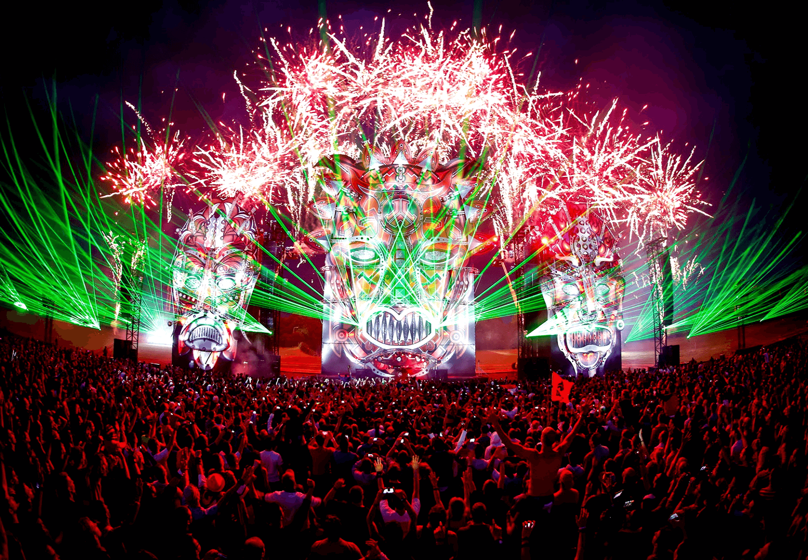
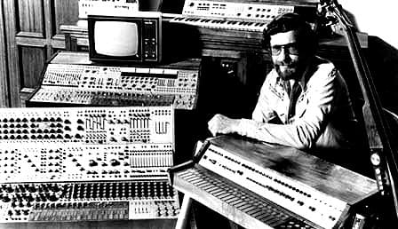
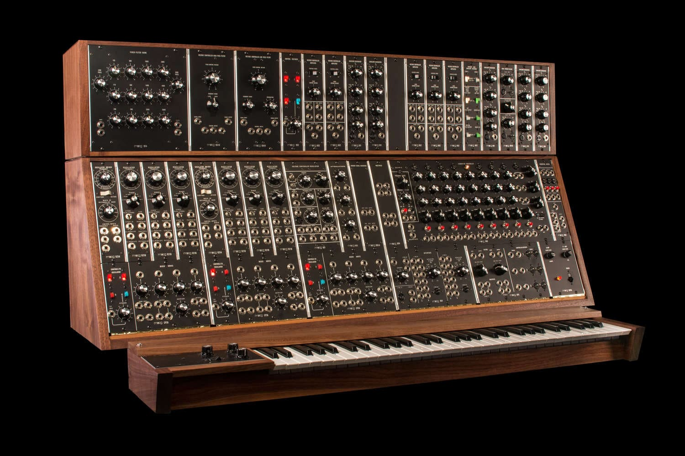
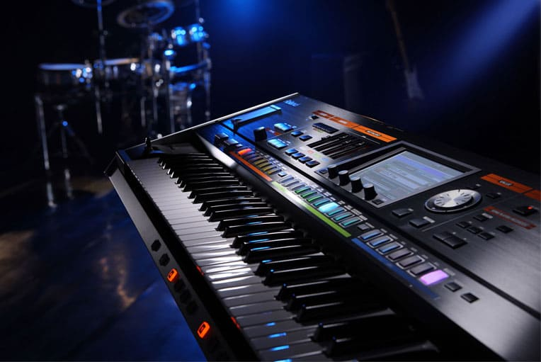
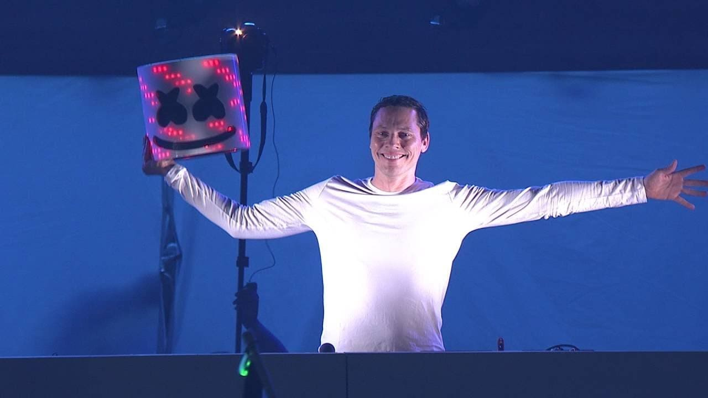
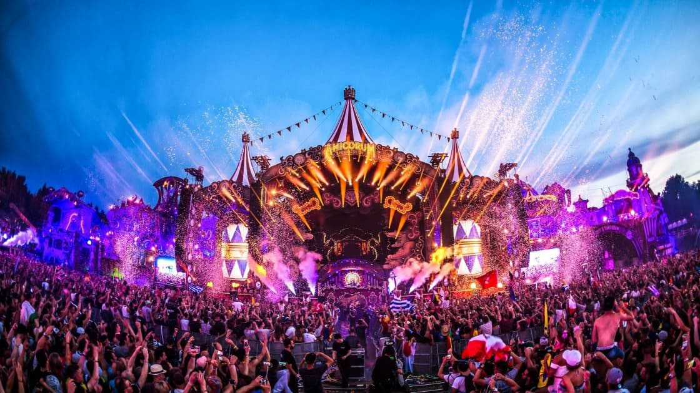

В цьому розділі і підібрав в морі Інтернету деякі цікаві факти про електро музику. Можливо деякі з них ви вже знаєте, а деякі, можливо будуть для вас новими. Тому заварюйте чайок та запасайтеся печеньками і приємного читання))).
Перші спроби створити електро музику почалися в 1890-х роках ХХст. Для того щоб створити кількахвилинну мелодію необхідно було кілька тижнів часу (!), оскільки в той час було доволі складно змішувати звуки та додавати до них ефекти. Винахід синтезатора в середині ХХст. здійснив фурор в музичних кругах. Він був створений з масиву генераторів електронного тону і пристроїв обробки, які контролювали характер звуків.
Двоє американців, Роберт Муг і Дональд Бухла, створили окремі компанії для виробництва синтезаторів в 1960-х роках. Синтезатор Роберта Муга був випущений в 1965 році і вважається важливим елементом розвитку електронної музики.
За ними пішли інші і незабаром синтезатори, які були керовані напругою і портативні були доступні для студійних і сценічних виступів.
У 1980-х роках комерційні синтезатори випускалися на регулярній основі. І з часом та завдяки зусиллям любителів музики та інженерів синтезатори дійшли до такого вигляду до якого ми звикли їх бачити.
Електро музика станом на теперішній день є надзвичайно популярною, тому не дивно, що на концерти таких виконавців як Marshmello, Skrillex, Alan Walker, Tiёsto, Hardwell та інших, збирається десятки тисяч народу.
Враховуючи популярність цього стилю розробники ігор стали звертатися до виконавців з проханням написати сакндтреки для їхніх творінь. Найкращим прикладом є виконавець Skrillex, який неодноразово брав участь в створенні саунд-контенту для ігор. Було навіть таке, що він заховав свій майбутній альбом у файлах гри Alien Ride, і для того, щоб почути всі треки необхідно було повністю пройти гру. Ось так от))).
Всі вже звикли бачити виконавців та їхні обличчя на постерах, альбомах, синглах, в новинах і так далі. проте існують існують деякі виконавці, які досить довго ховали свої обличчя від фанатів і тим самим збирали на свої концерти шалену кількість людей, які в надії приходили не стільки послухати енергійну музику, а щоб коли-небудь можливості побачити обличчя свого улюбленого виконавця. Нижче я наведу 3 знаменитих виконавців, які довгий час приховували свою особистість. Що ж поїхали!
Це напевно найвпізнаваніший виконавець Electro. Став відомим завдяки своєму образу усміхненої зефірки, носить на головні шолом-зефірку. Досить довго приховував свою особистість, одного разу під його шоломом на сцену виходив сам Tiёsto:
У жовтні 2018р. на одному телешоу він все таки зняв маску і показав світові своє обличчя. Ось як він виглядає бе маски:
Alan Walker - ще один виконавець, який постійно носить маску на пів обличчя, тим самим не даючи публіці побачити повністю себе розкрити. Відомий тим, що написав трек Faded, який зібрав мільйони переглядів на YouTube, тим самим заробивши своєму і без того популярному творцю ще більшу славу. Проте він не настільки "утаємничений" як Marshmello, і тому часто з'являвся на інтерв'ю без маски. Творитель Faded без маски:

І останній претендент в списку "таємничих виконавців" - Deadmau5. Знайомий всім завдяки своєму шолому у вигляді голови миші. Обрав саме цей образ через один випадок, коли знайшов у своєму обладнанні мертву мишу. Запостивши цб історію на свою сторінку у соцмережі, отримав свій псевдонім - Deadmau5. Цікавий факт - через свій образ навіть судився з Disney, оскільк його шолом віддалено нагадує Міккі Мауса. Ось як він виглядає без свого "скандального" шолому:
Темна сторона таких багатолюдних виступів - це алкоголь та наркотики. Хоча організатори намагаються всіма силами забезпечити хоч якийсь порядок на виступах, проте це в більшості випадків ні до чого не приводить. Алкоголь - найбільша проблема таких виступів, оскільки, що може бути гірше ніж в копито п'яні фанати! Від таких людей можна чекати чого завгодно - від бійок - до актів вандалізму.
Ще одна проблема - це наркотики, для дилерів багатотисячна армія фанатів електро музики як золоте яблучко на блюдечку, гріх цим не скористатися! Тому для таких випадків завжди наймають охоронні фірми для того, щоб ті стежили за правопорядком. І якщо з наркотиками ситуація не дуже складна, то з алкоголем зазвичай повна катастрофа. Тому часто після виступів на території знаходять цілі купи бляшанок та пляшок від випивки.
Нижче я привів таблицю з топовими виконавцями свого жанру. Всі дані були взяті з музичного сервісу Deezer, самих же виконавців я взяв з вкладки Головна - з жанрів.
| Виконавець/Виконавці | Стиль | Альбомів | Синглів |
|---|---|---|---|
| Blasterjaxx | Bigroom | 7 | 42 |
| Ian Pooley | Deep House | >70 | >22 |
| Noisia | Drum&Bass | 18 | 33 |
| Skrillex | Dubstep | 15 | 33 |
| Mark Knight | Tech House | >160 | 51 |
| Tiёsto | Electro | >125 | 130 |
| Flume | Future Bass | 12 | 21 |
| Dirty Palm | Future Bounce | 35 | 3 |